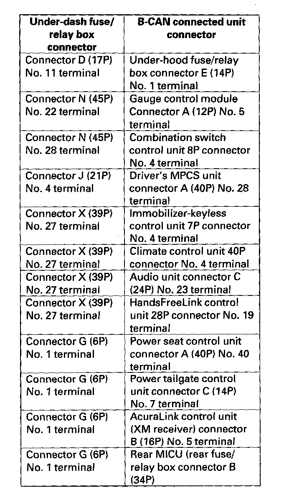

B1150
DTC B1050: Communication Bus Line ErrorDTC B1150: Communication Bus Line Error
DTC B1200: Communication Bus Line Error
DTC B1250: Communication Bus Line Error
DTC B1350: Communication Bus Line Error
DTC B1750: Communication Bus Line Error
DTC B1800: Communication Bus Line Error
DTC B1900. Communication Bus Line Error
DTC B1950: Communication Bus Line Error
DTC B2150: Communication Bus Line Error
DTC B2200: Communication Bus Line Error
NOTE: If you are troubleshooting multiple DTCs, be sure to follow the instructions in B-CAN System Diagnosis Test Mode A.
1. Clear the DTCs with the HDS.
2. Turn the ignition switch OFF, and then back ON (II).
3. Wait for 6 seconds or more.
4. Check for DTCs with the HDS.
Are DTCs B1050, B1150, B1200, B1250, B1350, B1750, B1800, B1900, B1950, B2150, and/or B2200 indicated?
YES - Go to step 5.
NO - Intermittent failure, the system is OK at this time. Check for loose or poor connections at the MICU and B-CAN connected units in the table.

5. Check for DTCs with the HDS.
Is DTC B1000 also indicated?
YES - Troubleshoot DTC B1000.
NO - Intermittent failure, the system is OK at this time. Check for loose or poor connections at the MICU and B-CAN connected units in the table.